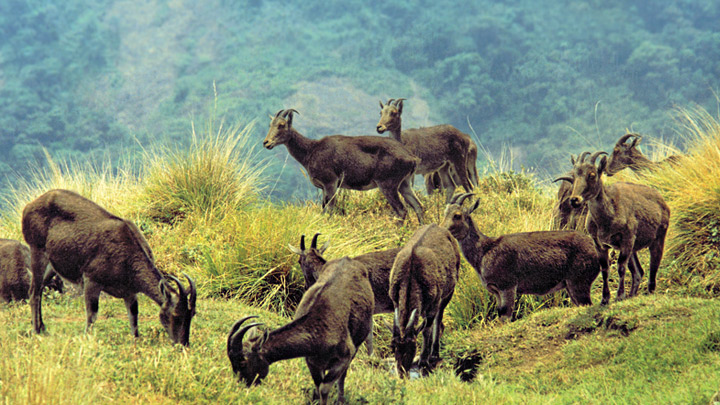

Munnar

Munnar rises as three mountain streams merge - Mudrapuzha, Nallathanni and Kundala. 1,600 m above sea level, this hill station was once the summer resort of the erstwhile British Government in South India. One of the most sought after honeymoon destinations in Kerala, Munnar is replete with resorts and logding facilities that fit a wide rage of budgets. Sprawling tea plantations, picturesque towns, winding lanes and holiday facilities make this a popular resort town. Among the exotic flora found in the forests and grasslands here is the Neelakurinji. This flower which bathes the hills in blue once in every twelve years, will bloom next in 2030. Munnar also has the highest peak in South India, Anamudi, which towers over 2,695 m.
Eravikulam National Park
How often have you visited a national park in the background of tea plantations? Here is one such national park in the high ranges of Kerala which offers the magnificent view of hills with tea plantations - the Eravikulam National Park. Situated in the Kannan Devan Hills of the southern Western Ghats, the wildlife park with an area of 97 sq. km. can be reached via Munnar. Located in the Devikulam Taluk of Idukki district in Kerala, after reaching Munnar, you need to take the road going to Rajamala to reach this national park. The national park is a protected area and is divided into three regions - the core area, the buffer area and the tourism area. Visitors are allowed only to the tourism area that is in Rajamala, the region lying beyond the road entry into Eravikulam. Eravikulam is also famous for the natural habitat of Nilgiri Tahr, the endangered mountain goat and this park is built with the aim of conserving them. Every twelve years, this place will be carpeted with blue… Yes, your guess is correct. It is one the place where you can witness the mass flowering of Neelakurinji flowers.
Idukki Dam

The Idukki Dam, located in Kerala, India, is a 168.91 m (554 ft) tall arch dam. The dam stands between the two mountains – Kuravanmala (839)m and Kurathimala (925)m. It was constructed and is owned by the Kerala State Electricity Board. It supports a 780 MW hydroelectric power station. It is built on the Periyar River, in the ravine between the Kuravan and Kurathi Hills in Kerala, India. At 167.68 metres, it is one of the highest arch dams in Asia and third tallest arch dam. It started generating power on 4 October 1975. Technically, the dam type is a concrete double curvature parabolic, thin arc dam. This dam was constructed along with two other dams at Cheruthoni and Kulamavu. Together, the three dams have created an artificial lake that is 60 km² in area. The stored water is used to produce electricity at the Moolamattom Power house, which is located inside nearby rocky caves. The Government of Canada aided in the building of the dam with long term loans and grants